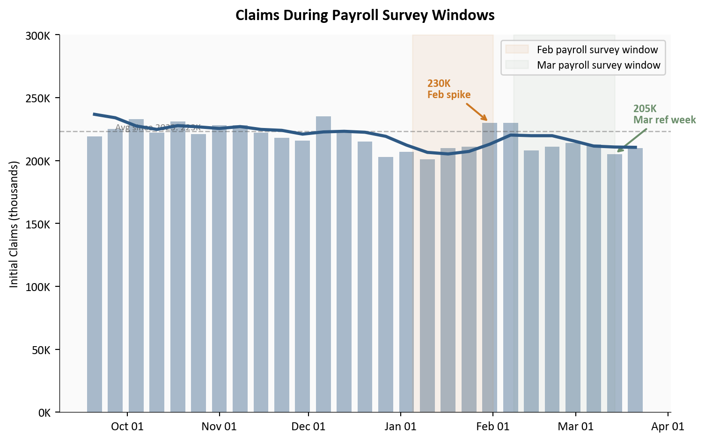
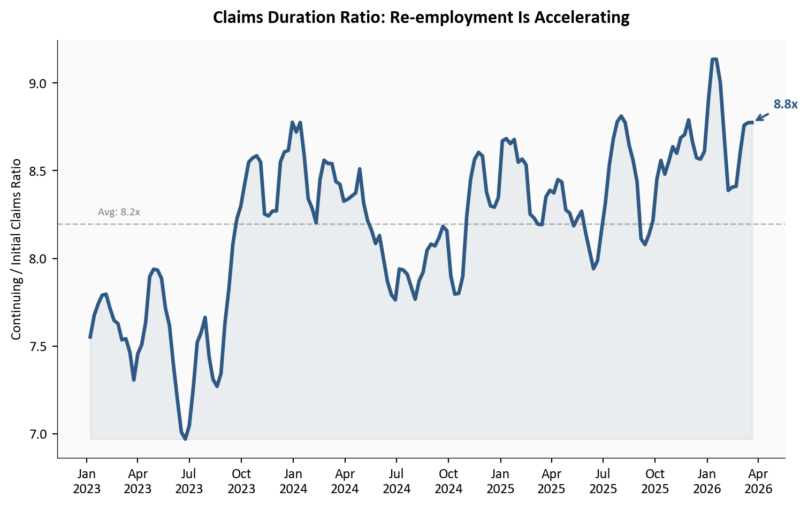

What Claims Data Tells Us Before the April Jobs Report
Initial and continuing claims paint a clear picture heading into April 3: layoffs are not the problem.
economics
data analysis
data visualization
labor market
Published
March 29, 2026
The March employment situation report drops on April 3, 2026, and the question on everyone’s mind is whether February’s payroll miss was a blip or the start of something worse. Weekly unemployment claims, the closest thing to a real-time pulse on the labor market, offer the clearest preview we have. Initial claims for the week ending March 21 came in at 210,000, with continuing claims falling to 1,819,000, the lowest level since May 25, 2024. The 4-week moving average for initial claims sits at 210,500, comfortably below the 223,149 average since 2023. The signal heading into Friday is unambiguous: whatever is happening in the labor market, it is not layoffs.
For context on the employer sentiment side of this story, the March 22 BTOS analysis showed businesses pulling back on hiring while holding steady on overall performance. That framing still holds. This post focuses on what the claims data adds to that picture.
NoteReproducing this analysis
The Python code used to generate each chart is included in this post. Click on any code block to see the full implementation. The complete data pipeline includes:
01_clean_data.py - Processes FRED initial and continuing claims CSVs
02_compute_stats.py - Computes summary statistics for inline values
Initial claims (ICSA) and continuing claims (CCSA) sourced from FRED. DOL weekly release dated March 26, 2026.
210,000
Initial Claims
+5,000 from prior week
210,500
4-Week Moving Avg
Below 223,149 avg since 2023
1,819,000
Continuing Claims
Lowest since May 2024
1.2%
Insured Unemp. Rate
Unchanged from prior week
DOL Weekly Claims Report | Week ending March 21 | Source: U.S. Department of Labor via FRED
1. Initial Claims: The Trend That Matters
A single week’s claims number is noisy. The 4-week moving average strips out that volatility and reveals the underlying trend. After a brief spike to 230,000 in late January and early February, the moving average has declined steadily and now sits at 210,500. The two panels below tell the story at different scales: the full post-pandemic normalization on the left, and a six-month close-up on the right that makes the recent movements readable.
Figure 1: Left: full post-pandemic history of initial claims, showing the normalization from 600K+ levels to the narrow band observed since 2023. Right: three-month close-up showing the late-January spike and its reversal, with the 4-week MA declining steadily through March.
Two features stand out. First, the left panel shows that the normalization from pandemic-era levels was essentially complete by mid-2023, and claims have traded in a remarkably narrow band since then. The 195,000-to-259,000 range over the past three years is tight by historical standards. Second, the right panel makes the recent dynamics visible: the late-January spike to 230,000 has fully reversed, and the 4-week MA is trending down through March.
2. Continuing Claims: The Re-employment Signal
If initial claims tell you how many people are losing jobs, continuing claims tell you how quickly they are finding new ones. A rising continuing claims number means displaced workers are staying on benefits longer, a sign of a labor market where re-employment is getting harder. The opposite is happening now.
Figure 2: Continuing unemployment claims (seasonally adjusted) and 4-week moving average since mid-2021. The latest reading of 1.819 million is the lowest since May 2024, suggesting that workers who lose jobs are finding new positions relatively quickly.
Continuing claims dropped 32,000 to 1,819,000, the lowest reading since May 25, 2024. Year-over-year, continuing claims are down 57,000 from 1,876,000. The 4-week moving average at 1,847,000 has been drifting lower since the start of the year. This is the most underappreciated signal in the data: even as businesses report hiring caution in surveys, workers who do lose their jobs are cycling back into employment at a healthy pace.
3. The February Spike in Context
The late-January/early-February spike in initial claims deserves closer examination because it overlapped with the survey reference period for the February employment report, the one that produced the payroll miss. Did the claims spike signal real weakness, or was it noise?
Show code
# =============================================================================# The February Spike: Claims During the Payroll Survey Window# Source: data/clean/initial_claims.csv (FRED series ICSA)# =============================================================================six_months_ago = pd.Timestamp("2025-09-20")recent = df_icsa[df_icsa["date"] >= six_months_ago].copy()fig, ax = plt.subplots(figsize=(8, 5))# Weekly barsax.bar(recent["date"], recent["initial_claims"] /1000, width=5, color=COLORS['primary'], alpha=0.4)# 4-week MA lineax.plot(recent["date"], recent["initial_claims_4wma"] /1000, color=COLORS['primary'], linewidth=2.5, zorder=5)# Highlight the Feb survey reference period (approx Jan 5 - Feb 1, 2026)ax.axvspan(pd.Timestamp("2026-01-05"), pd.Timestamp("2026-02-01"), alpha=0.08, color=COLORS['warning'], label='Feb payroll survey window')# Highlight the March survey reference periodax.axvspan(pd.Timestamp("2026-02-08"), pd.Timestamp("2026-03-14"), alpha=0.06, color=COLORS['positive'], label='Mar payroll survey window')# Annotate the spikespike_date = pd.Timestamp("2026-01-31")ax.annotate(f"230K\nFeb spike", xy=(spike_date, 230), xytext=(-50, 20), textcoords='offset points', fontsize=9, color=COLORS['warning'], fontweight='bold', arrowprops=dict(arrowstyle='->', color=COLORS['warning'], lw=1.5))# Annotate the March reference weekmar_ref_date = pd.Timestamp("2026-03-14")mar_ref_val = recent.loc[recent["date"] == mar_ref_date, "initial_claims"]iflen(mar_ref_val) >0: ax.annotate(f"{int(mar_ref_val.values[0]/1000)}K\nMar ref week", xy=(mar_ref_date, mar_ref_val.values[0] /1000), xytext=(15, 25), textcoords='offset points', fontsize=9, color=COLORS['positive'], fontweight='bold', arrowprops=dict(arrowstyle='->', color=COLORS['positive'], lw=1.5))# Reference line at since-2023 meanmean_val = stats['icsa_mean_since_2023'] /1000ax.axhline(y=mean_val, color=COLORS['neutral'], linestyle='--', linewidth=1, alpha=0.4)ax.text(recent["date"].iloc[1], mean_val +1,f'Avg since 2023: {mean_val:.0f}K', fontsize=8, color=COLORS['neutral'], alpha=0.7)ax.set_ylabel("Initial Claims (thousands)")ax.set_xlabel("")ax.set_ylim(top=300)ax.xaxis.set_major_formatter(mdates.DateFormatter('%b %d'))ax.xaxis.set_major_locator(mdates.MonthLocator())ax.yaxis.set_major_formatter(ticker.FuncFormatter(lambda x, _: f"{x:.0f}K"))ax.legend(loc='upper right', fontsize=9, framealpha=0.9)ax.set_title("Claims During Payroll Survey Windows", fontsize=13, fontweight='bold', pad=12)plt.tight_layout()

Figure 3: Initial claims (weekly bars and 4-week MA) for the past six months. The shaded region marks the approximate February payroll survey window. The late-January spike to 230K coincided with this window but has since fully reversed. Claims during the March survey reference period were among the lowest of the year.
The answer is noise. The spike to 230,000 lasted exactly two weeks before claims resumed their downward drift. The March survey reference period (the week including March 12) saw initial claims at 205,000, one of the lowest readings of the year. If the February payroll miss was partly driven by the claims spike during its survey window, the March report should benefit from the opposite dynamic: claims falling during its reference period.
4. Initial vs. Continuing: What the Spread Tells Us
The relationship between initial and continuing claims reveals the flow of the labor market. When initial claims are stable but continuing claims are falling, it means the inflow of new layoffs is steady while the outflow (people finding new jobs) is accelerating. That is exactly what the data shows.
Show code
# =============================================================================# Claims Ratio: Continuing / Initial (4-Week MAs)# Source: data/clean/initial_claims.csv, continuing_claims.csv# =============================================================================# Merge on date (CCSA is lagged one week behind ICSA)# Align by shifting CCSA dates forward one week for comparisondf_merged = pd.merge( df_icsa[["date", "initial_claims_4wma"]].rename(columns={"date": "date"}), df_ccsa[["date", "continuing_claims_4wma"]].assign( date=df_ccsa["date"] + pd.Timedelta(days=7) ), on="date", how="inner").dropna()df_merged["ratio"] = df_merged["continuing_claims_4wma"] / df_merged["initial_claims_4wma"]# Filter to since 2023df_ratio = df_merged[df_merged["date"] >="2023-01-01"].copy()fig, ax = plt.subplots(figsize=(8, 5))ax.plot(df_ratio["date"], df_ratio["ratio"], color=COLORS['primary'], linewidth=2.5)ax.fill_between(df_ratio["date"], df_ratio["ratio"], df_ratio["ratio"].min(), alpha=0.08, color=COLORS['primary'])# Latest annotationlast = df_ratio.iloc[-1]ax.annotate(f"{last['ratio']:.1f}x", xy=(last["date"], last["ratio"]), xytext=(15, 10), textcoords='offset points', fontsize=10, fontweight='bold', color=COLORS['primary'], arrowprops=dict(arrowstyle='->', color=COLORS['primary'], lw=1.5))# Mean linemean_ratio = df_ratio["ratio"].mean()ax.axhline(y=mean_ratio, color=COLORS['neutral'], linestyle='--', linewidth=1, alpha=0.4)ax.text(df_ratio["date"].iloc[2], mean_ratio +0.05,f'Avg: {mean_ratio:.1f}x', fontsize=8, color=COLORS['neutral'], alpha=0.7)ax.set_ylabel("Continuing / Initial Claims Ratio")ax.set_xlabel("")ax.xaxis.set_major_formatter(mdates.DateFormatter('%b\n%Y'))ax.xaxis.set_major_locator(mdates.MonthLocator(interval=3))ax.set_title("Claims Duration Ratio: Re-employment Is Accelerating", fontsize=13, fontweight='bold', pad=12)plt.tight_layout()

Figure 4: Ratio of continuing claims to initial claims (4-week MAs) since 2023. A falling ratio means workers are cycling off unemployment faster relative to new filings. The ratio has declined through early 2026, suggesting improving re-employment dynamics even as new filings remain flat.
The declining ratio is good news for the April 3 report. Even if net job creation was modest in March, the flow data suggests that the pool of unemployed workers is shrinking. People who lose jobs are not staying unemployed for long. This is inconsistent with the kind of labor market deterioration that would produce a second consecutive payroll miss.
What It Means for April 3
TipKey takeaway
The claims data heading into the April 3 jobs report is about as clean as it gets. Initial claims are low and stable, continuing claims are at a nearly two-year low, and the February spike that may have contaminated the payroll survey has fully reversed. The base case is a rebound in March payrolls.
For the Fed: Claims at 210,000 and an insured unemployment rate of 1.2% leave no room to argue that the labor market is deteriorating. The February payroll miss increasingly looks like an anomaly, not a trend break. If March payrolls rebound, the Fed’s case for holding rates steady strengthens further. Any rate action will be driven by the inflation side, not the labor side.
For workers: The continuing claims data is the most encouraging signal. At 1,819,000, displaced workers are finding re-employment faster than at any point since mid-2024. The risk is not layoffs but the hiring freeze documented in the BTOS data: fewer new openings even as existing jobs remain secure.
For markets: A strong March payroll number, supported by the claims trend, would reinforce the soft-landing narrative and likely push rate-cut expectations further out. A second miss, given the claims backdrop, would raise questions about structural shifts in the labor market that weekly data cannot capture.
Methodology & Data
Data series used in this analysis. Claims data through week ending March 21, 2026.
Initial claims measure new filings for unemployment insurance, not total layoffs. Not all separated workers file claims, particularly in states with lower benefit levels or among workers ineligible for UI.
Continuing claims reflect only those actively receiving benefits under regular state programs. Workers who exhaust benefits or transition to other programs drop out of the count.
Seasonal adjustment factors can introduce distortions around holidays and year-end, which may partially explain the late-January spike.
The insured unemployment rate covers only the fraction of the labor force eligible for and receiving UI benefits, making it structurally lower than the headline unemployment rate (U-3).
Weekly claims data can be revised in subsequent weeks. The figures used here are advance estimates from the March 26 release.
This post references the Census Bureau’s Business Trends and Outlook Survey (BTOS) via the March 22 analysis. BTOS is an experimental data product with a unit response rate of approximately 10-15%, which introduces potential nonresponse bias. Larger, more established businesses tend to respond at higher rates, meaning the survey may underrepresent smaller firms, startups, and businesses in sectors with less administrative capacity. The Census Bureau publishes unit response rates (URR) with each release and applies weighting adjustments to mitigate known biases, but readers should interpret BTOS diffusion indexes as directional signals from a particular slice of the business population rather than precise measurements of economy-wide conditions.
Data current as of March 26, 2026. Claims data through week ending March 21, 2026. The April employment situation report is scheduled for April 3, 2026.